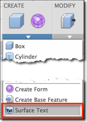
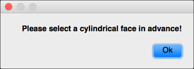
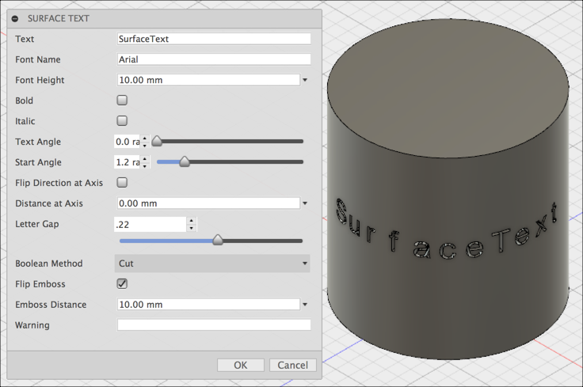
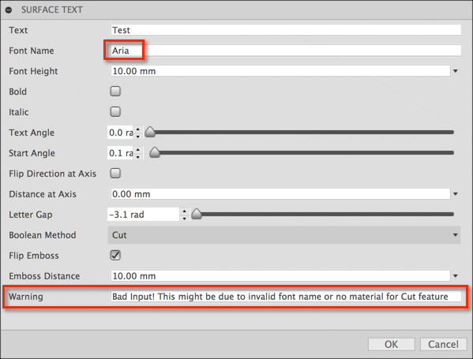

Surface Text
Fusion 360 add-in that lets the user place text on various surfaces including a cylindrical face.
Getting Started
This add-in allows the user to produce the exturde features of sketch text on a surface. It is designed for cylinder face. It can also work for other types of surfaces, but does not have much parameters to adjust the text for any surface.
To use the add-in, click the following command
Surface Text
Runs the command that will pop up a dialog with lots of options that can define how the text is created.
Usage
Once installed, the "Surface Text" add-in will create a new button in the menu of the
"Model" workspace's "Create" panel.

A face needs to be selected before running the command, otherwise you get a warning message.

There are many options you can set in the dialog including the Font that should be used for the text.

If you cannot see the text on a cylinder, then the easiest might be to play around with the
Start Angle value which will push the text around the side of the cylinder.
- Text: input the text string
- Font Name: input the font name. The default one is Arial which might be available in any platform.
- Font Height: specify the text height in the unit of this document
- Bold:specify whether the text string is bold
- Italic:specify whether the text string is italic
- Text Angle:specify the angle of each letter in radian. The angle is relative to the x-axis of the x-y plane of the sketch which the letter is created from
- Start Angle:specify the start angle of the first letter in radian. The angle is in the range scope of surface parameter.
- Flip Direction at Axis:specify the direction of the text string at axis of a cylinder face. When you see the text is upside down to you, you could consider to use this option
- Distance at Axis:specify the distance of the text along the axis of a cylinder face in the unit of this document. This distance is measured from the default location the add-in places the first letter
- Letter Gap:specify the gap of each letter. The gap is in radian from -PI to +PI. The positive value means the next letter is after the previous letter, while the negative is reversed.
- Boolean Method: specify the method to create the text feature. Cut means to cut material. Join means to add the material
- Flip Emboss:specify the direction of extrude feature of the text, along the normal at the text position of the surface
- Emboss Distance: specify the distance of the extrude feature in the unit of this document
- Warning:Not a parameter! It displays message if there are any issues with the provided parameters. The most possibilities of a failure would be:
- Font Name:is invalid
- in Cut mode of Boolean Method:, the text feature has not any material to cut. In such case, try to adjust the parameters until all text letters have material to cut

Installation and Uninstallation
You can unload the add-in without uninstalling it by clicking the
"Stop" button when the add-in is selected in the list box on the "Add-Ins"
tab of the "Scripts and Add-Ins" dialog.
Unchecking "Run on Startup" causes the add-in not to be loaded in future sessions of
Fusion 360.
Additional Information
The source code for this add-in written in Python is available inside the add-in's folder or on GitHub
(C) Copyright 2015 by Autodesk, Inc.
Permission to use, copy, modify, and distribute this software in
object code form for any purpose and without fee is hereby granted,
provided that the above copyright notice appears in all copies and
that both that copyright notice and the limited warranty and restricted
rights notice below appear in all supporting documentation.
AUTODESK PROVIDES THIS PROGRAM "AS IS" AND WITH ALL FAULTS.
AUTODESK SPECIFICALLY DISCLAIMS ANY IMPLIED WARRANTY OF MERCHANTABILITY OR
FITNESS FOR A PARTICULAR USE. AUTODESK, INC. DOES NOT WARRANT THAT THE
OPERATION OF THE PROGRAM WILL BE UNINTERRUPTED OR ERROR FREE.
This add-in was written by Xiaodong Liang.
Xiaodong is a Developer Advocate at Autodesk, working as part of the Autodesk Developer Network program.
Support Information
Email us at fusion.apps@autodesk.com with feedback or requests
for enhancements.
Version History